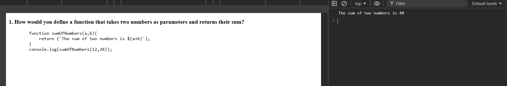
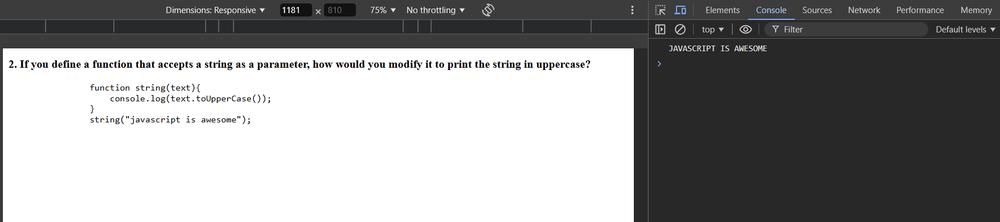
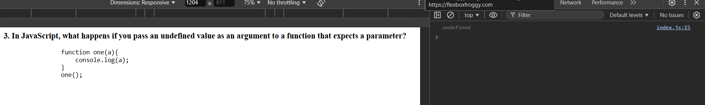
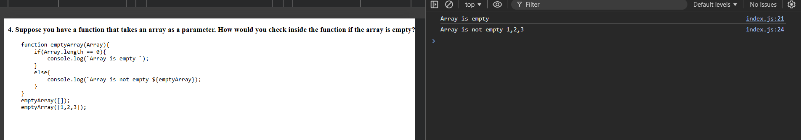
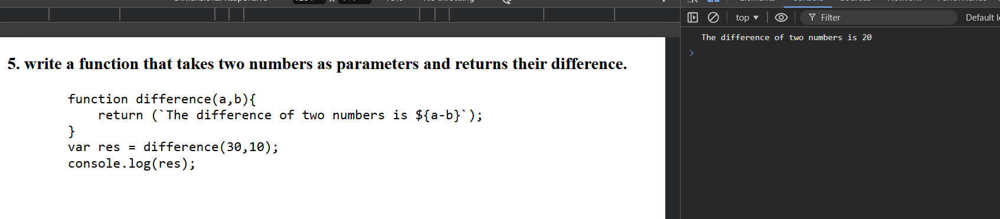
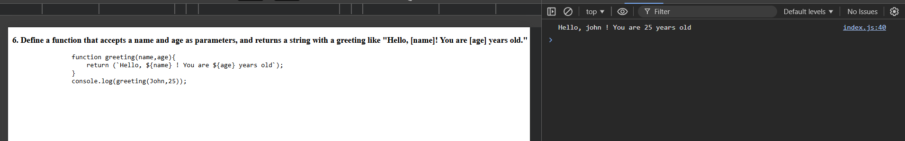
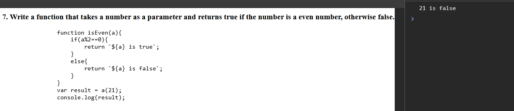

1. How would you define a function that takes two numbers as parameters and returns their sum?
function sumOfNumbers(a,b){
return (`The sum of two numbers is ${a+b}`);
}
console.log(sumOfNumbers(12,28));

2. If you define a function that accepts a string as a parameter, how would you modify it to print the string in uppercase?
function string(text){
console.log(text.toUpperCase());
}
string("javascript is awesome");

3. In JavaScript, what happens if you pass an undefined value as an argument to a function that expects a parameter?
function one(a){
console.log(a);
}
one();

4. Suppose you have a function that takes an array as a parameter. How would you check inside the function if the array is empty?
function emptyArray(Array){
if(Array.length == 0){
console.log(`Array is empty `);
}
else{
console.log(`Array is not empty ${emptyArray});
}
}
emptyArray([]);
emptyArray([1,2,3]);

5. write a function that takes two numbers as parameters and returns their difference.
function difference(a,b){
return (`The difference of two numbers is ${a-b}`);
}
var res = difference(30,10);
console.log(res);

6. Define a function that accepts a name and age as parameters, and returns a string with a greeting like "Hello, [name]! You are [age] years old."
function greeting(name,age){
return (`Hello, ${name} ! You are ${age} years old`);
}
console.log(greeting(John,25));

7. Write a function that takes a number as a parameter and returns true if the number is a even number, otherwise false.
function isEven(a){
if(a%2==0){
return `${a} is true`;
}
else{
return `${a} is false`;
}
}
var result = a(21);
console.log(result);
